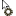
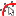

![[./files/images/actions/Open.gif]](./files/images/actions/Open.gif) |
Open |
Open a plot or data file |
You can also drag the files into the form |
|
Save |
Save current plot as MattPlot file
|
Current data and plot layout will be saved |
![[./files/images/actions/Export.gif]](./files/images/actions/Export.gif) |
Export |
Export current plot to a given format |
This is generally a lossy, irreversible transformation,
see Exporting section |
![[./files/images/actions/ExportFrameToText.gif]](./files/images/actions/ExportFrameToText.gif) |
ExportFrameToText |
Export current Frame tracks to a text file
|
This is a shortcut of the more general ExportFrame |
![[./files/images/actions/ExportFrameToMatlab.gif]](./files/images/actions/ExportFrameToMatlab.gif) |
ExportFrameToMatlab |
Export data to MatLab® workspace via m-file |
This is a shortcut of the more general ExportFrame |
![[./files/images/actions/Print.gif]](./files/images/actions/Print.gif) |
Print |
Print current plot bitmap |
See printing section |
![[./files/images/actions/EditOptions.gif]](./files/images/actions/EditOptions.gif) |
EditOptions |
Edit the ini file containing the non volatile application settings
|
Avoid to put this action in the toolbar, since
it calls ReadOptions |
![[./files/images/actions/ReadOptions.gif]](./files/images/actions/ReadOptions.gif) |
ReadOptions |
Parse the ini file
|
Useful when you change the ini file with an external
editor; it rebuilds toolbar, so cannot be launched
from there
|
![[./files/images/actions/StoreOptions.gif]](./files/images/actions/StoreOptions.gif) |
StoreOptions |
Save current options in the ini file
|
Useful to recreate a default MattPlot.ini
when missing
|
![[./files/images/actions/SetDefaults.gif]](./files/images/actions/SetDefaults.gif) |
SetDefaults |
Reset options to default values |
Has the same effect of restarting program without MattPlot.ini |
|
SetStylePlain |
A style example; this style is good for printing |
Use StoreOptions and see MattPlot.ini to view these customizations
|
![[./files/images/actions/SetStylePSpice.gif]](./files/images/actions/SetStylePSpice.gif) |
SetStylePSpice |
A style example |
Use StoreOptions and see MattPlot.ini to view these customizations
|
|
Exit |
Quit program |
|
![[./files/images/actions/SelectMode.gif]](./files/images/actions/SelectMode.gif) |
SelectMode |
Switch to select mode |
In this mode you can modify plot layout by
dragging, adding or deleting frames and tracks
|
|  |
EditMode |
Switch to edit mode |
In this mode you can modify tracks;
currently it includes only a crop tool
|
![[./files/images/actions/PanMode.gif]](./files/images/actions/PanMode.gif) |
PanMode |
Switch to pan mode |
In this mode you can modify Frame mapped space offset
|
![[./files/images/actions/ZoomMode.gif]](./files/images/actions/ZoomMode.gif) |
ZoomMode |
Switch to zoom mode |
In this mode you can modify Frame mapped space scale
|
![[./files/images/actions/MeasureMode.gif]](./files/images/actions/MeasureMode.gif) |
MeasureMode |
Switch to measure mode |
In this mode you can perform simple measures on tracks |
![[./files/images/actions/PenMode.gif]](./files/images/actions/PenMode.gif) |
PenMode |
Switch to pen mode |
In this mode you can scribble on plot canvas;
those marks will be cleaned at next refresh, however
they remains on prints and snapshoots
|
![[./files/images/actions/LockX.gif]](./files/images/actions/LockX.gif) |
LockX |
Synchronize frames abscissa scale |
Operations on current Frame are reflected on the others,
useful when comparing more frames
|
![[./files/images/actions/LockY.gif]](./files/images/actions/LockY.gif) |
LockY |
Synchronize frames ordinate scale |
Operations on current Frame are reflected on the others,
useful when comparing more frames
|
|
ClearAll |
Remove all frames and Track, emptying the plot
|
This action cannot be undone |
![[./files/images/actions/Snapshot.gif]](./files/images/actions/Snapshot.gif) |
Snapshot |
Take a plot bitmap snapshot and save in
current directory with a default name
|
This overwrites last snapshot
See also SnapshotAction option
|
|
Refresh |
Force a repaint of plot canvas |
Useful when you want to remove volatile scribbles |
![[./files/images/actions/MeasureAbscissa.gif]](./files/images/actions/MeasureAbscissa.gif) |
MeasureAbscissa |
Enable instant abscissa measure |
Affects only measure mode |
![[./files/images/actions/MeasureOrdinate.gif]](./files/images/actions/MeasureOrdinate.gif) |
MeasureOrdinate |
Enable instant ordinate measure |
Affects only measure mode |
![[./files/images/actions/MeasureSlope.gif]](./files/images/actions/MeasureSlope.gif) |
MeasureSlope |
Enable instant slope measure |
Affects only measure mode |
![[./files/images/actions/ViewMeasureMarkers.gif]](./files/images/actions/ViewMeasureMarkers.gif) |
ViewMeasureMarkers |
Display measure markers |
See also measure mode and
MeasureMarkers option
|
![[./files/images/actions/Properties.gif]](./files/images/actions/Properties.gif) |
Properties |
Edit generic object properties |
Applies on last clicked object |
|
Remove |
Remove the current selected object |
Applies on last clicked object |
![[./files/images/actions/StayOnTop.gif]](./files/images/actions/StayOnTop.gif) |
StayOnTop |
Keep the program main form always visible
|
Force main form to stay on top (z order) when focusing other forms |
![[./files/images/actions/ExecMacro.gif]](./files/images/actions/ExecMacro.gif) |
ExecMacro |
Execute the macro defined in Macro option entry
|
Not yet implemented |
|
AddFrame |
Create a new empty Frame |
|
![[./files/images/actions/RemoveFrame.gif]](./files/images/actions/RemoveFrame.gif) |
RemoveFrame |
Delete a frame |
Applies on current Frame; same effect of dragging Frame outside the form
|
|
FrameProperties |
Edit frame properties |
Applies on current Frame |
|
ClearFrame |
Remove all Track in current Frame |
This action cannot be undone |
![[./files/images/actions/AddMarker.gif]](./files/images/actions/AddMarker.gif) |
AddMarker |
Insert a vertical/horizontal line at a given value |
Applies on current Frame |
![[./files/images/actions/AddText.gif]](./files/images/actions/AddText.gif) |
AddText |
Insert a text label at given coordinates |
Single line text (no word wrap),
applies on current Frame |
![[./files/images/actions/GotoOrigin.gif]](./files/images/actions/GotoOrigin.gif) |
GotoOrigin |
Force space offset to view frame axes origin |
Applies on current Frame |
|
FitToAxes |
Change Frame scale to fit all contained Tracks and axes
|
Applies on current Frame |
![[./files/images/actions/FitToTracks.gif]](./files/images/actions/FitToTracks.gif) |
FitToTracks |
Change Frame scale to fit all contained Tracks
|
Applies on current Frame |
|
FitToTrack |
Change Frame scale to fit current Track |
Applies on current Frame |
|
ZoomIn |
Change scale to map less space (zoom in) |
This default zoom is introduced to follow some
users practice; it would be better use the quick
toggle to zoom mode
|
|
ZoomOut |
Change scale to map more space (zoom out) |
Same as previous |
|
ToggleScaleX |
Use linear or logarithmic scale for abscissa axis |
x=KX+X0 / x=KLogX+X1 |
|
ToggleScaleY |
Use linear or logarithmic scale for ordinate axis |
y=KY+Y0 / y=KLogY+Y1 |
![[./files/images/actions/LegendToggle.gif]](./files/images/actions/LegendToggle.gif) |
LegendToggle |
Show/hide legend |
Applies on current Frame; you can also drag legend
|
![[./files/images/actions/GridToggle.gif]](./files/images/actions/GridToggle.gif) |
GridToggle |
Show/hide grid |
Applies on current Frame |
![[./files/images/actions/GridMore.gif]](./files/images/actions/GridMore.gif) |
GridMore |
Thicken (shrink) grid lines |
Applies on current Frame |
![[./files/images/actions/GridLess.gif]](./files/images/actions/GridLess.gif) |
GridLess |
Thin (expand) grid lines |
Applies on current Frame |
|
AddTrack |
Create a new Track in current Frame |
|
|
RemoveTrack |
Delete current Track |
Same effect of dragging Track outside the form
|
|  |
TrackProperties |
Edit Track properties
|
Applies on current Track |
![[./files/images/actions/MarkPoints.gif]](./files/images/actions/MarkPoints.gif) |
MarkPoints |
Plot Track marking its points
|
See also TrackPointSize option
|
![[./files/images/actions/ShowCoords.gif]](./files/images/actions/ShowCoords.gif) |
ShowCoords |
Show Track points coordinates
|
Coordinates are shown when point distance is greater than
the value set in TrackCoordsDist option
|
![[./files/images/actions/StrokeLines.gif]](./files/images/actions/StrokeLines.gif) |
StrokeLines |
Plot Track drawing linear interpolation lines
|
Applies on current Track |
![[./files/images/actions/FillArea.gif]](./files/images/actions/FillArea.gif) |
FillArea |
Plot Track filling subtended area
|
Applies on current Track |
![[./files/images/actions/DrawHistograms.gif]](./files/images/actions/DrawHistograms.gif) |
DrawHistograms |
Plot Track painting a rectangle for each point
|
Applies on current Track |
|
TrackData |
Edit Track data manually
|
See here for details
|
![[./files/images/actions/TrackTransform.gif]](./files/images/actions/TrackTransform.gif) |
TrackTransform |
Apply a transformation on current Track |
For example cropping
or filtering;
see Transforming section
|
![[./files/images/actions/TrackStatistics.gif]](./files/images/actions/TrackStatistics.gif) |
TrackStatistics |
Display current Track quantities
|
Relative to overall domain, applies on current Track |
![[./files/images/actions/ShowTree.gif]](./files/images/actions/ShowTree.gif) |
ShowTree |
Show plot tree of contained frames and tracks |
Drag and drop should be enabled;
remember that you can also modify plot
layout switching to
Select mode
and drag frames and tracks with mouse
|
![[./files/images/actions/ShowPane.gif]](./files/images/actions/ShowPane.gif) |
ShowPane |
Show/hide a control that displays measured
quantities relative to selected Track |
Use it with Measure mode.
See also AutoPane option.
|
![[./files/images/actions/ShowLog.gif]](./files/images/actions/ShowLog.gif) |
ShowLog |
Toggle log window |
Log is useful to know what is happening |
|
Compute |
Elaboration tool: perform operations between tracks |
Not yet available |
![[./files/images/actions/TextEditor.gif]](./files/images/actions/TextEditor.gif) |
TextEditor |
Run an instance of embedded text editor |
Take advantage of syntax highlighting to edit
data or ini files
|
![[./files/images/actions/Abort.gif]](./files/images/actions/Abort.gif) |
Abort |
Stop current long-time action |
Typically when importing or computing a large
amount of data.
Advice: remember its keyboard shortcut!
|
|
Update |
Manually check for updates |
This simply opens current MattPlot web site
address in your default browser
|
![[./files/images/actions/Demo.gif]](./files/images/actions/Demo.gif) |
Demo |
Add some frames and tracks to demonstrate program capabilities |
Use this for training purposes |
|
ExperimentalStuff |
Another demo with ugly stuff |
Not recommended features |
|
HelpContents |
Opens this file |
Shortcut is fixed to F1.
Uses HtmlHelp library
(see here)
|
|
About |
Display program informations |
Also contains a simplified performance indicator |
|
EasterEgg |
|
Ehmm... |